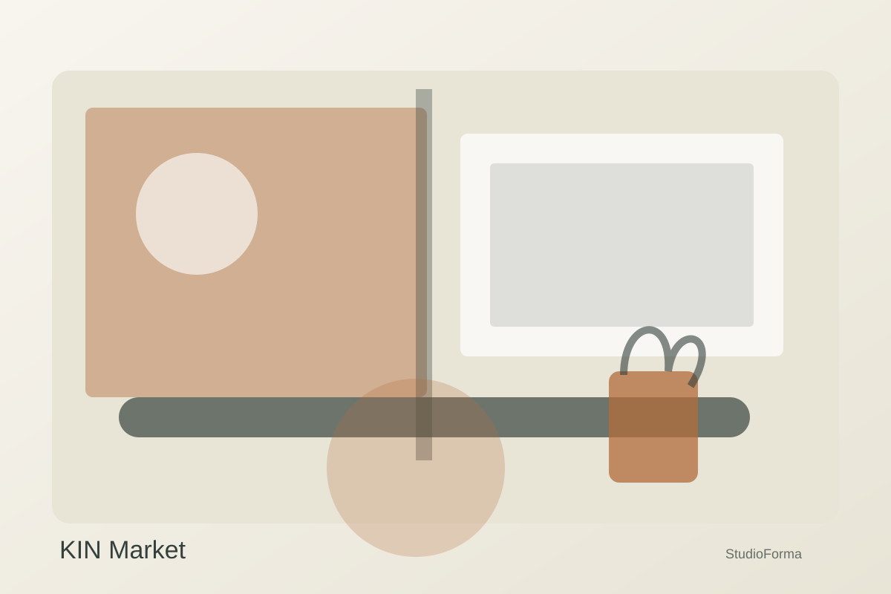
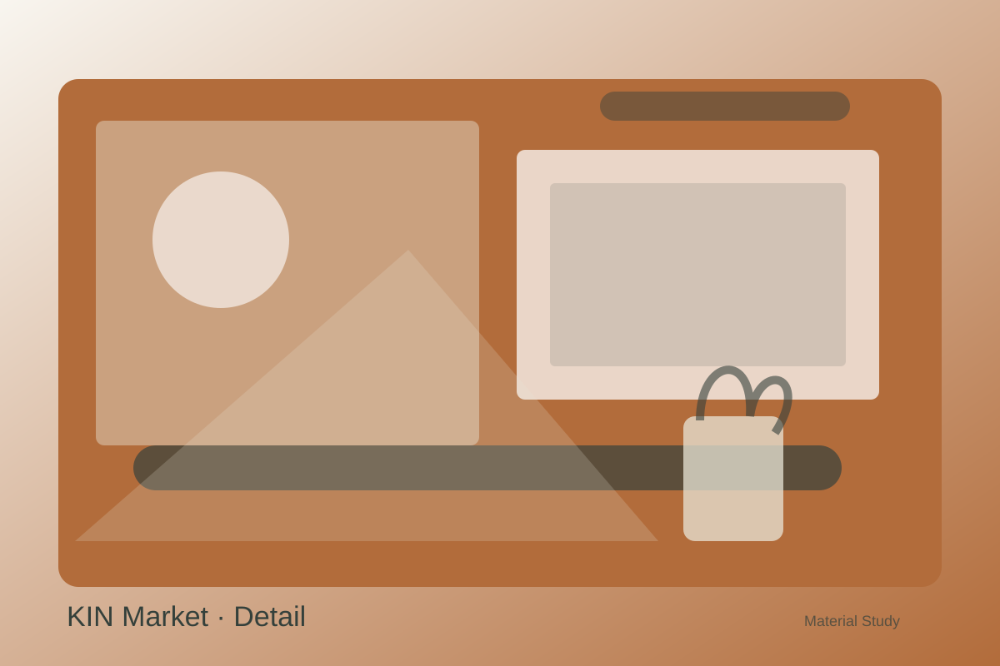

Commercial · 2025
KIN Market
A neighborhood food hall built around flexible counters, communal tables and bold wayfinding.
LocationBerlin, Germany
Area690 m²
Year2025
Indicative build budget€760K

Case study
Designing the essential.
01 · Challenge
The operator needed many independent vendors to feel coherent while keeping stalls easy to change.
02 · Response
We designed a common material kit, modular signage and shared service infrastructure while allowing individual color moments.
03 · Outcome
A lively market that reads as one destination while supporting changing vendors and seasonal programming.
Material study
Texture before decoration.
A restrained palette lets grain, reflection, shadow and touch create the atmosphere.

Before / after concept
Move the slider.